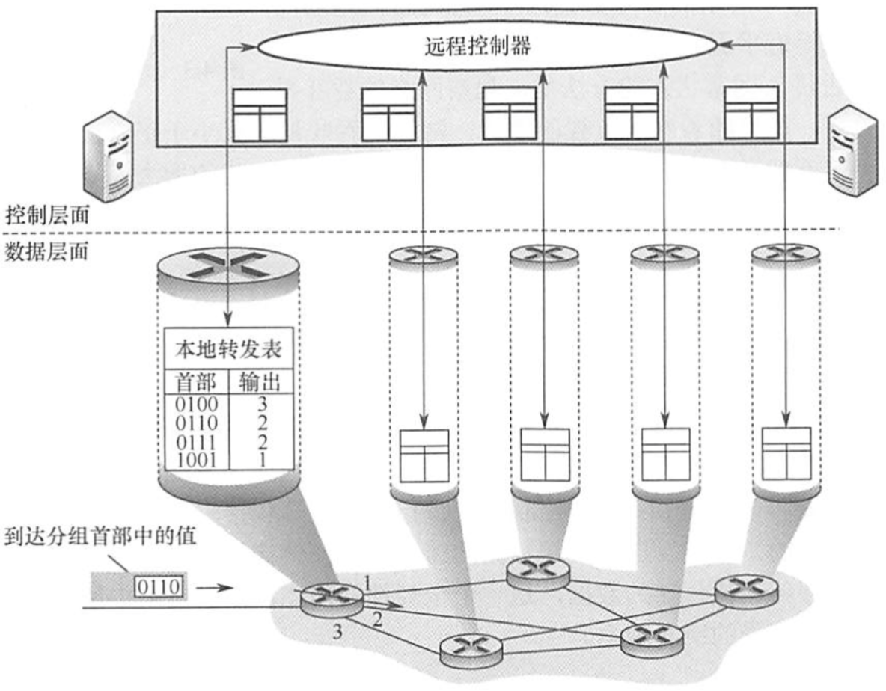

2022.08.14
[toc]
拥塞控制
异构网络互联——物理层与链路层都不一样的异构网络
路由与转发
SDN（软件定义网络）
集中式控制面板（Openflow协议等），分布式数据面板
北向接口：对上层应用的开发者，北向接口提供了一系列丰富的API，开发者不用关心硬件细节。
南向接口：SDN控制器和转发设备建立双向会话的接口称为南向接口，通过不同的南向接协议(如 Openflow)，SDN控制器就可兼容不同的硬件设备，同时可以在设备中实现上层用的逻辑。
东西接口：SDN控制器集群内部控制器之间的通信接口称为东西向接口，用于增强整个控制层面的可靠性和可拓展性。
我的理解：
上北下南，左西右东。向上为开发者提供借口，向下与转发设备建立会话，最后与身边的内部控制器通信。

视频讲解(by 湖科大教书匠)：
- SDN这种新型网络体系结构的核心思想：把网络的控制层面利用软件来控制数据层面中的许多设备。
- OpenFlow协议可以被看成是SDN喜提结构中控制层面与数据层面之间的通信接口。
- 在SDN中取代传统路由器中转发表的是：“流表（Flow Table）”。在OpenFlow交换机中，既可以处理数据链路层的帧，，也可以处理网际层的IP数据报，还可以处理运输层的TCP或UDP报文。
拥塞控制
全局性的问题,涉及网络中所有的主机、路由器及导致网络传输能力下降的所有因素。
开环控制（在运行前分配好）与闭环控制（运行中调控）
【例题】在路由器互联的多个局域网的结构中,要求每个局域网(C)
A.物理层协议可以不同，而数据链路层及其以上的高层协议必须相同
B.物理层、数据链路层协议可以不同，而数据链路层以上的高层协议必须相同
C.物理层、数据链路层、网络层协议可以不同，而网络层以上的高层协议必须相同
D.物理层、数据链路层、网络层及高层协议都可以不同